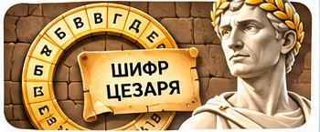

📖 Історія: нова справа
У музеї знайдено лист із зашифрованим написом. Поруч — два кола з літерами. Буч пропонує обертати внутрішнє коло та спробувати Атбаш.
Сюжетна інтерактивна майстерка

У музеї знайдено лист із зашифрованим написом. Поруч — два кола з літерами. Буч пропонує обертати внутрішнє коло та спробувати Атбаш.
Як один зсув змінює весь текст?
У шифрі Цезаря кожну літеру замінюють іншою зі сталим зсувом. Атбаш замінює літери відповідно до алфавіту у зворотному порядку.
Оберніть колесо, зашифруйте й розшифруйте власне слово.
Зовнішній алфавіт
Внутрішній алфавіт після зсуву
Порівняйте результати.
Чи можна повернути початкове повідомлення, якщо відомий ключ?
Сформулюйте власне правило або коротку інструкцію для друга. Знайдіть приклад, де воно стане корисним.
Запишіть, що Ви перевірили, що змінилося під час експерименту і який висновок зробили.
У вікні друку оберіть «Зберегти як PDF». Ваші дані залишаються в браузері.